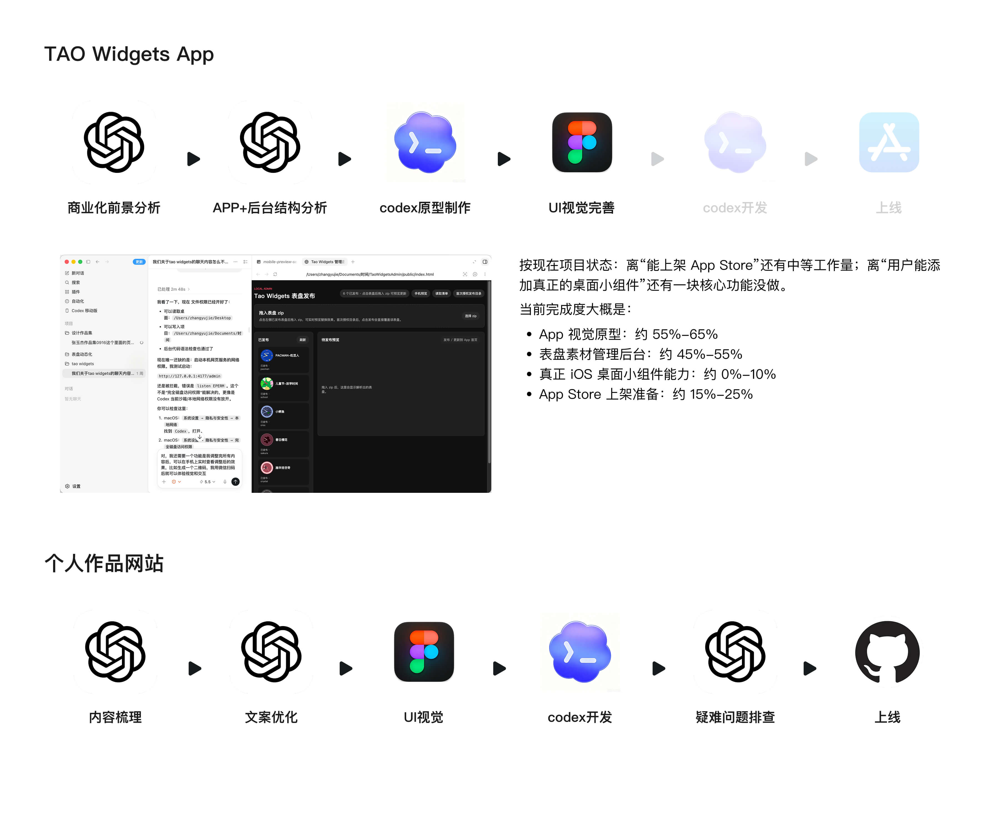
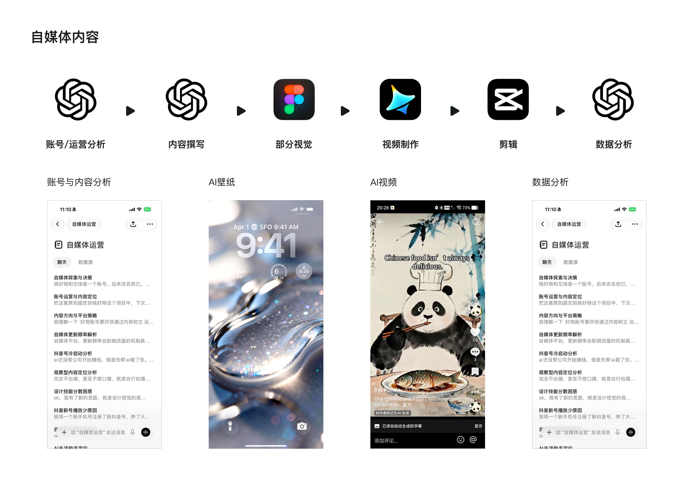
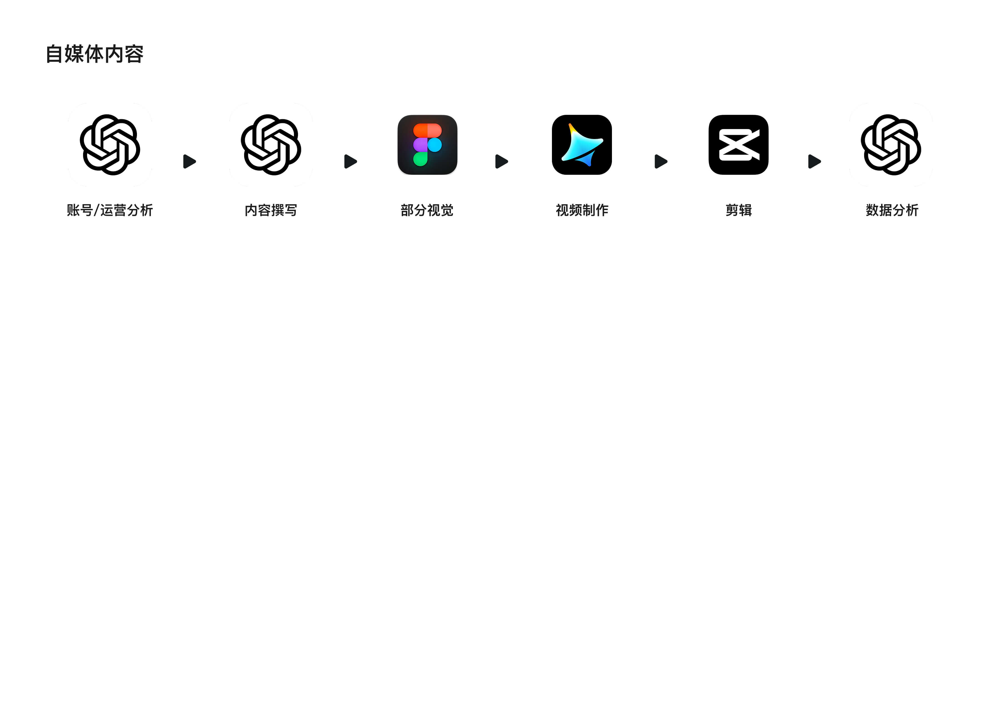

NO.1
概览
我是一名正在从UI设计向AI产品设计转型的设计师，通过 ChatGPT、Figma AI、即梦与 vibe coding 构建了一套覆盖内容生产、视觉设计与轻量产品原型的 AI 驱动设计工作流，并在自媒体与小组件分发场景中进行实际验证。

我是一名正在从UI设计向AI产品设计转型的设计师，通过 ChatGPT、Figma AI、即梦与 vibe coding 构建了一套覆盖内容生产、视觉设计与轻量产品原型的 AI 驱动设计工作流，并在自媒体与小组件分发场景中进行实际验证。
已上架分发：在 iScreen 平台完成多个小组件 / 表盘设计并上线，覆盖时间 / 天气 / 个性化桌面等场景。
有用户使用和反馈：用户自发使用、收藏与传播，个别设计形成“系列化复用”。
设计产品商业化：将使用Vibecoding制作属于自己的小组件app，逐渐形成自己的推广平台。

已上架分发：在 iScreen 平台完成多个小组件 / 表盘设计并上线，覆盖时间 / 天气 / 个性化桌面等场景。
有用户使用和反馈：用户自发使用、收藏与传播，个别设计形成“系列化复用”。
设计产品商业化：将使用Vibecoding制作属于自己的小组件app，逐渐形成自己的推广平台。

已上架分发：在 iScreen 平台完成多个小组件 / 表盘设计并上线，覆盖时间 / 天气 / 个性化桌面等场景。
有用户使用和反馈：用户自发使用、收藏与传播，个别设计形成“系列化复用”。
设计产品商业化：将使用Vibecoding制作属于自己的小组件app，逐渐形成自己的推广平台。

宜家风格小组件创意尝试获得小红书社区用户较高关注与二次传播（涉及版权未商业化）。
华为主题商店方向的设计 BD 主动沟通入驻合作
硬件表盘方向厂商曾就设计方案与合作报价进行咨询
在这个过程中，我逐渐把工作从“视觉设计输出”扩展为包含交互结构、主题系统、适配规则与分发策略的轻量产品设计探索。
当前已在平台完成初步分发与验证，具备一定用户使用基础与外部合作意向，但整体仍处于早期探索阶段，后续仍需在产品化、平台合作与规模化分发上持续投入。